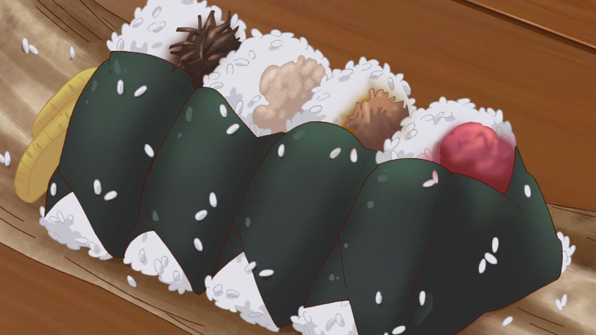

Onigiri

Onigiri is a japanese food made from white rice formed into triangular or cylindrical shapes and often wrapped in nori.
Ingredients
- Rice
- Nori
- Choice of filling
Steps
- Use freshly cooked rice
- Wet your hands
- Salt your hands
- Use just enough pressure to form desired shape
- Wrap in nori